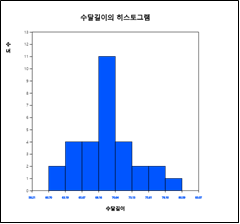

질적 데이터의 도수분포표
2장에서 질적 데이터의 시각화에 대해 살펴보았다. 예를 들면 표 4.1과 같은 성별(1:남자, 2:여자) 데이터의 막대, 원, 띠그래프 등을 그려보았는데 이와 같은 그래프는 남자와 여자의 빈도수 즉, 도수분포를 이용하여 그린 것이다.
표 4.1 성별 데이터
| 성별 |
|---|
| 1 |
| 2 |
| 1 |
| 2 |
| 1 |
| 1 |
| 1 |
| 2 |
| 1 |
| 2 |
데이터의 수가 많고 복잡할 때 그래프를 이용한 데이터 시각화를 하면 내포된 정보를 쉽고 빠르게 살펴볼 수 있다.
하지만 좀 더 자세한 정보를 얻고 싶을 때는 표나 측도를 구하여 살펴보는 것이 좋다. 이 장에서는
질적 데이터 요약 방법으로서 도수분포표와 교차표를 소개한다.
양적 데이터 정리 방법으로서 측도를 이용한 데이터 요약을 설명한다.
2장에서 질적 데이터의 시각화에 대해 살펴보았다. 예를 들면 표 4.1과 같은 성별(1:남자, 2:여자) 데이터의 막대, 원, 띠그래프 등을 그려보았는데 이와 같은 그래프는 남자와 여자의 빈도수 즉, 도수분포를 이용하여 그린 것이다.
| 성별 |
|---|
| 1 |
| 2 |
| 1 |
| 2 |
| 1 |
| 1 |
| 1 |
| 2 |
| 1 |
| 2 |
[그림 4.1]과 같이 변량선택박스에서 '분석변량'으로 성별을 선택하면 [그림 4.3]과 같은 성별의 막대그래프가 그려지고 여기서 마우스로 도수분포표 아이콘 을 선택하면 [그림 4.4]와 같은 남녀별 학생수에 대한 도수분포표가 결과저장창에 나타난다.
막대그래프나 원그래프는 이 도수분포를 이용하여 그린 것이다.
양적 데이터에 대한 도수분포표는 구간을 나누어 각 구간에 속하는 데이터의 빈도수를 조사하여 작성한다. 일반적으로 동일한 간격을 갖고, 서로 중복되지 않는 계급구간(class interval)을 여러 개 설정해 각 구간에 속하는 데이터의 개수를 도수분포표에 나타낸다. 이를 위해 먼저 최댓값과 최솟값을 구하여 데이터의 범위를 알아본 다음 구간의 개수를 결정한다. '몇 개의 구간을 할 것인가?'는 분석자의 선택인데 일반적으로 데이터의 수에 따라 5개에서 10개 사이의 구간의 수가 많이 이용된다. 구간의 개수가 정해지면 데이터값의 범위(=최댓값-최솟값)를 구간의 개수로 나누어 구간의 너비를 계산한다. 각 구간의 시작점과 끝점은 대개 '~ 이상(≥)에서 ~ 미만(<)'으로 정한다.

그래프 밑의 선택 대화상자에서([그림 4.7]) '도수분포표'를 클릭하면 [그림 4.8]과 같은 구간별 도수분포표가 결과저장창에 나타난다.
만일 히스토그램 구간을 60kg에서 5kg간격으로 재조정하기 위해서는 그래프 선택사항에서 '구간시작'을 60, 구간너비를 5로 설정한 후 '새구간으로 실행' 버튼을 누르면 [그림 4.9]와 같은 히스토그램이 나타난다. 선택사항의 '도수분포표'를 클릭하면 [그림 4.10]의 도수분포표가 나타난다.
교차표(cross table 또는 contingency table)는 두 개의 범주형 변량을 요약하여 그 연관된 특성을 연구하는데 매우 효과적인 표로서 한 변량의 도수분포표와 유사하다. 교차표는 두 변량의 가능한 변량값을 행과 열로 나누어 행변량의 속성과 열변량의 속성이 교차하는 부분에 셀(cell)을 만든 후, 각 데이터마다 행변량과 열변량의 데이터값을 조사하여 해당되는 셀에 속하는 데이터의 빈도수를 조사한다. 분석을 위해 각 셀의 빈도수 밑에 행의 합에 대한 백분율, 열의 합에 대한 백분율, 그리고 전체 백분율을 표시하기도 한다.
교차표는 범주형 데이터에 대해서 작성하는 것이지만 연속형 데이터의 경우 구간을 나누어 범주형 데이터로 만들어 교차표를 작성할 수도 있다.
교차표를 작성하여 분포를 살펴보면 대략 두 변량 사이의 관련성을 알 수 있다. 이를 좀 더 자세히 알아보기 위해서는 행변량와 열변량의 독립성검정, 또는 동질성검정 등의 통계분석을 할 수 있는데, 11장에서 자세히 알아보기로 한다.
| 성별 | 결혼여부 |
|---|---|
| 1 | 1 |
| 2 | 2 |
| 1 | 1 |
| 2 | 1 |
| 1 | 2 |
| 1 | 1 |
| 1 | 1 |
| 2 | 2 |
| 1 | 3 |
| 2 | 1 |
마우스로 첫째 변량('분석변량') '결혼여부'와, 둘째 변량('by 그룹') '성별'의 변량명을 차례로 클릭하면 기본적으로 선택되어있는 [그림 4.12]와 같은 성별 결혼여부의 막대그래프가 나타난다. 이때 도수분포표 아이콘 을 클릭하면 성별 결혼여부의 교차표가 결과저장창에 표시된다([그림 4.13]). 교차표에서는 행변량이 그룹변량이 되고 열변량이 분석변량이 된다. 이 교차표를 이용하여 성별 결혼여부에 대한 막대그래프가 그려진 것이다.
중심위치의 측도(measure of central tendency)에는 평균, 중앙값, 최빈값 등이 있는데 이 중 가장 많이 사용되는 것이 평균(mean)이다.(이것을 산술평균이라고도 한다.) 평균은 데이터를 대표하는 일종의 무게중심으로 볼 수 있다. \(n\)개의 자료를 \(x_1 , x_2 , ... , x_n \)으로 표시하였을 때 평균은 다음과 같은 공식으로 나타낼 수 있다. $$ \small \mu = \frac{1}{n} \sum_{i=1}^n x_i $$ 주어진 데이터가 모집단일 때의 평균을 모평균(population mean)이라 하고 보통 μ(그리스 문자로 '뮤'라고 읽음)로 표시한다. 또한, 주어진 데이터가 표본일 때의 평균을 표본평균(sample mean)이라 하고 \(\overline x\) ('엑스 바아'라고 읽음)로 표시한다. 평균은 어느 한 데이터값이 아주 크거나 작은 극단점의 영향을 많이 받는다. 하지만 표본평균은 모평균을 예측하기 위한 좋은 성질을 가지고 있어서 데이터 분석에 자주 사용된다.
일반적으로 평균은 자료를 대표하는 값으로 매우 적절하지만 자료 중에 매우 큰 값이나 작은 값이 있을 때는 이 값에 영향을 많이 받는다. 이러한 경우 중앙값(median)이 이용된다. 중앙값은 데이터를 크기 순서로 나열할 때 중앙에 놓이는 값으로 데이터가 표본일 경우 m, 모집단일 경우 M으로 표시한다. 즉, 데이터의 수를 n이라 할 때, n이 홀수이면 (n+1)/2 번째의 값을 중앙값으로, n이 짝수이면 n/2 번째와 (n/2 + 1)번째 데이터값의 평균을 중앙값으로 정의한다. 중앙값은 극단점이 있는 경우에도 민감하지 않아 극단점이 있는 경우에는 평균보다 중심위치의 측도로 더 자주 쓰인다.
최빈값(mode)은 데이터 중 가장 빈도가 많은 값이다. 하지만 연속형 데이터일 경우 많은 데이터값들이 한번만 나타나기 때문에 단순히 빈도수가 많은 값을 최빈값으로 정하는 것은 불합리하다. 이런 경우 연속형 데이터를 몇 개의 계급구간으로 나누어서 각 구간에 대한 도수분포표로 정리한 후 가장 도수가 높은 구간의 중간값을 최빈값으로 정하기도 한다.
어느 체조시합에서 '갑'선수의 경기에 대한 네 심판의 채점이 3, 4, 6, 7점이었다. 또 '을'선수의 경기에 대한 채점은 2, 4, 6, 8점이었다. 두 선수 모두 평균은 5점이지만 '을'은 '갑'에 비해 점수의 편차가 크다는 것을 쉽게 알 수 있다. 데이터가 흩어진 정도를 수치로 측정하는 것을 산포도의 측도(measure of dispersion)라 한다. 많이 쓰이는 산포도의 측도는 분산 또는 표준편차이고, 그밖에 범위, 사분위수범위 등이 있다.
분산(variance)이란 각 데이터값과 평균과의 거리를 제곱하여 합을 구한 후 이를 데이터의 수로 나눈 것이다. 따라서 데이터가 평균을 중심으로 많이 흩어져 있으면 분산이 커지고, 데이터가 평균주위에 몰려 있으면 분산이 작게 된다. 모집단의 분산을 모분산(population variance)이라 부르며 \(\sigma^2\)(시그마 제곱)으로 표시하고, 표본의 분산을 표본분산(sample variance)이라 부르며 \(s^2\)로 표시하면 다음과 같은 공식으로 나타낼 수 있다. $$ \text{모분산} \quad \sigma^{2} ~=~ { {1 \over N} {\sum _{i=1} ^{N} (x_{i} - \mu )^{2}} } ~~~~ (N:~모집단 자료수) $$ $$ \text{표본분산} \quad s^{2} ~=~ { {1 \over {n-1}} {\sum _{i=1} ^{n} (x_{i} - \overline x )^{2}} } ~~~~ (n:~표본 자료수) $$ 표본분산을 계산할 때 표본의 수 n 대신 (n-1)을 사용하는 데 그 이유눈 6장에서 설명한다.
모집단 표준편차(standard deviation)는 분산의 제곱근으로 정의하고 \(\sigma\)로 표시한다. 분산은 제곱거리의 평균이어서 현실적인 해석이 쉽지 않으나 표준편차는 분산의 제곱근이어서 각 값과 평균과의 평균거리의 측도로 해석이 가능하다. 표본의 표준편차는 표본분산의 제곱근으로 \(s\)로 표시한다. $$ \text{모표준편차} \quad \sigma ~=~ \sqrt{\sigma^2} $$ $$ \text{표본표준편차} \quad s ~=~ \sqrt{s^2} $$
범위(range)는 데이터의 최댓값에서 최솟값을 뺀 차이를 나타낸다. 범위는 계산하기가 간편하나 극단점이 있을 경우 올바른 산포의 측도가 되지 못한다.
범위의 단점을 보완한 것이 사분위수범위인데 이것을 알기 위해서 먼저 백분위수를 살펴보자. p% 백분위수 (percentile)는 데이터를 작은 것부터 큰 것까지 순서대로 늘어놓았을 때 대략 p%번째 데이터를 뜻한다.
백분위수 중 25% 백분위수를 일사분위수(1st quartile, \(Q_1\)으로 표시), 50% 백분위수를 이사분위수 (2nd quartile, \(Q_2\)로 표시) 또는 중앙값(m으로 표시), 75% 백분위수를 삼사분위수(3rd quartile, \(Q_3\)로 표시) 라고 부른다. 사분위수범위(interquartile range, IQR로 표시)는 삼사분위수에서 일사분위수를 뺀 값 즉, \(Q_3 - Q_1\) 이다.
상자그래프(box-whisker plot)는 이러한 사분위수에 관한 데이터의 정보를 그래프로 나타낸 것으로 최근에 많이 사용되기 시작한 데이터정리 방법이다. 상자그래프는 먼저 일사분위수(\(Q_1\))와 삼사분위수(\(Q_3\))를 네모상자로 연결한 다음 중앙값(m)을 상자 안에 표시한다. \(Q_1\)-1.5*IQR 이내인 값 중에서 최솟값과 \(Q_3\)+1.5*IQR의 이내의 최댓값을 상자와 선으로 연결한다([그림 4.14] 참조). 상자그래프를 이용하면 데이터분포의 대칭성, 데이터의 중심위치, 산포의 정도 등을 잘 알아볼 수 있다. 극단점이 있을 경우 \(Q_1\)-1.5*IQR과 \(Q_3\)+1.5*IQR의 선을 넘는 데이터는 극단점으로 간주하기도 한다. 통계패키지에서는 상자그래프의 좌측선을 max(최솟값, \(Q_1\)-1.5*IQR), 우측선을 min(최댓값,\(Q_3\) +1.5*IQR)으로 표시하기도 한다.
변이계수(coefficient of variation)는 표준편차를 평균으로 나눈값에 100을 곱하여 %를 계산한 것으로서 단위가 다른 두 종류의 데이터를 비교할 때 이용된다.
상자그래프 아이콘을 클릭하면 [그림 4.16]과 같은 그래프가 보여진다.